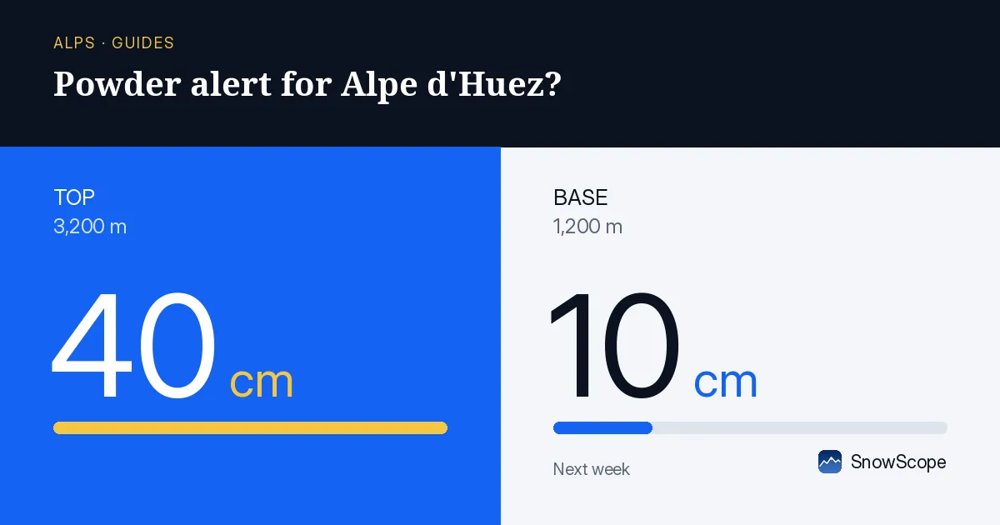

Powder alert for Alpe d'Huez? 18–62 cm of fresh snow next week (23–29 November)
Wednesday 25 November is the day to circle for Alpe d'Huez. It carries the biggest single share of next week's snow, and over the whole week of 23–29 November the top around 3200 m collects 40 cm (18–62 cm) while the base gets 10 cm.
See the live snow forecast for Alpe d'Huez in the SnowScope appSnow depth, powder alerts and the 3D map, free.

Next week, height by height
At the top (around 3200 m) the week totals 40 cm, 18–62 cm across our range. Mid-mountain around 2200 m gets 35 cm (15–55 cm), and the base around 1200 m 10 cm (4–16 cm).
Most of the total arrives on Tuesday 24 (4 cm, up to 7), Wednesday 25 (11 cm, up to 12), Thursday 26 (11 cm, up to 17) and Sunday 29 (10 cm, up to 20), counted at the top as the middle of our forecast and the high case.
Where the good snow will be
Wednesday 25 November is the snowiest day up top: 11 cm in the middle of our forecast and up to 12 cm in the high case. The morning after a snowy day is usually the one to ski, once lifts and patrols have caught up.
Go high: depth is safest on Pic Blanc and the Sarenne glacier, and the best skiing should be on the Pic Blanc and Sarenne side, before the sun works on the big south-facing bowl. Treat Vaujany, Oz and Auris on the lower edges of the domain as the weak point.
Snow or rain at the bottom?
The base around 1200 m gets 10 cm against 40 cm at the top. That gap says the snow line sits above the village for much of the week: rain or wet snow down low, real snow only higher up.
The resort is known for its sunny aspect, which is lovely in March and harsh on fresh snow in November.
Next door, the same week
Same week, same measure (top of each resort): Les 2 Alpes (13 km away) 47 cm; La Grave (18 km away) 49 cm; Serre Chevalier (42 km away) 47 cm. Alpe d'Huez itself: 40 cm.
So La Grave is the better bet for fresh snow next week, if you are free to choose.
What 17–20 November leaves behind
Next week does not start from scratch. From Tuesday 17 to Friday 20 November our forecast gives the top 78 cm (52–103 cm) and the base 1 cm, the bigger fall of the fortnight. By the time the next round arrives, the upper mountain should already carry a real cover.
The range, not just the number
The range is wide: 18 cm in the low case, 62 cm in the high one. That is normal a week ahead. The timing is more reliable than the total.
Book flexibly if you can: the picture for Alpe d'Huez will be much sharper by the weekend.
Tips for skiers
- Off the groomed runs, new snow means new avalanche risk: the French avalanche bulletin (BERA) for the massif is the reference.
- Check the resort's own opening date and lift status: snow on the mountain does not mean lifts are running.
- Pack for wet weather in the village: the 10 cm at the base hides a lot of rain.
More maps (external sites)
About these numbers
Snow numbers: our two-week snow forecast issued on 16 November 2026, read at three heights of the resort (top, mid-mountain, base). Each total is the middle of a range, with a low and a high case. These are estimates for the slopes, not resort measurements, and forecasts move from day to day: check the live map before you go.
Cite this report
For research, teaching or the press: the numbers and charts are free to reuse under CC BY 4.0 with this citation.
SnowScope (2026), Powder alert for Alpe d'Huez? 18–62 cm of fresh snow next week (23–29 November), https://snowscope.app/blog/en/2026/11/alpe-dhuez-powder-forecast-next-week-23-29-november-2026.html, accessed 2026-11-16
SnowScope (Atlas Labs). (2026, November 16). Powder alert for Alpe d'Huez? 18–62 cm of fresh snow next week (23–29 November). SnowScope snow reports. https://snowscope.app/blog/en/2026/11/alpe-dhuez-powder-forecast-next-week-23-29-november-2026.html
BibTeX
@misc{snowscope2026alpedhuezpowderforecastn,
author = {{SnowScope (Atlas Labs)}},
title = {Powder alert for Alpe d'Huez? 18–62 cm of fresh snow next week (23–29 November)},
year = {2026},
month = nov,
howpublished = {\url{https://snowscope.app/blog/en/2026/11/alpe-dhuez-powder-forecast-next-week-23-29-november-2026.html}},
note = {Published 2026-11-16 11:23 UTC; accessed 2026-11-16}
}· CC BY 4.0 · Methods, data and tools →
Alpe d'Huez: snow and temperature by height, this winter vs last (tools) →
Follow Alpe d'Huez
Free: a message when fresh snow is coming, and the forecast every morning.
More snow reports

Zermatt has 47 cm on upper slopes today, 690% above the November median. The 0°C level stays above 2200 m through Friday.

Les Deux Alpes: 38–42 cm of fresh snow in 72 hours (Alps, 14 November). La Grave got 53 cm of new snow in the last 72 hours, 7 cm of it in the last …

Les Deux Alpes snow forecast compared with the region: 51 cm by 14 November. The snow cover shrank from 45,820 km² on 9 November to 38,440 km² today, …